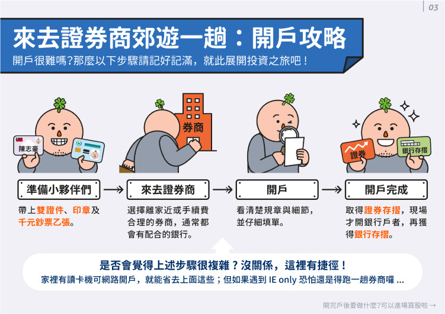
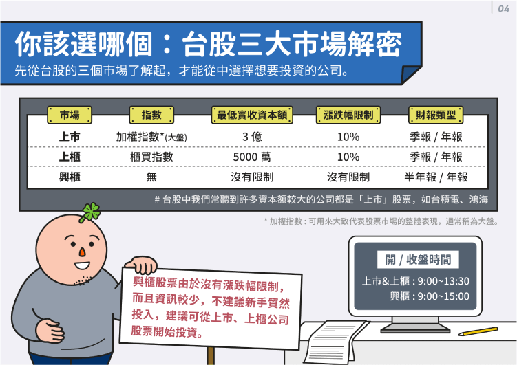
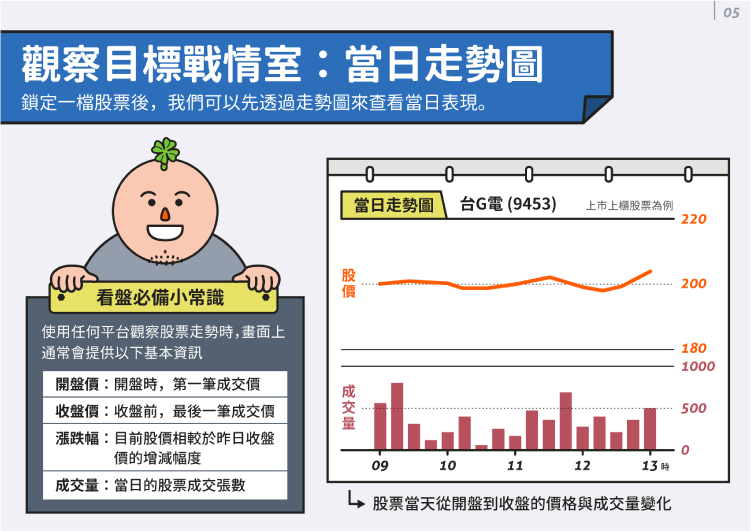

股票入門第一步：股票怎麼買？
股票新手買股票前首先要用證券戶，如果還沒有證券戶的投資朋友可以到券商進行開戶。開戶除了要注意有沒有把「開戶小夥伴們（雙證件、印章、1,000 元現金）」帶在身上， 也需留意券商所提供的手續費優惠是否足夠優惠（市面行情價 5 折，如果高於 5 折建議詢問行員），我們建議你選擇大型、資金充裕的券商， 一方面能獲得較低手續費（如有融資需求，大型券商也有較充裕的融券數量），另一方面營業據點比較多，如果遇到需要臨櫃處理的急件，處理上會方便許多。
延伸閱讀=>
股票開戶怎麼選？證券開戶前要準備什麼？證券開戶只要開交割戶？台股入門 證券戶推薦｜2023 證券開戶推薦哪家好？券商證券手續費比較！

股票入門第二步：認識台灣股票市場
世界各國的股票市場大致分為上市、上櫃、興櫃三種，台灣股市也不例外。最簡單區分上市、上櫃、興櫃的方法是觀察「最低實收資本額」，興櫃公司若高於門檻就能往上櫃前進，以此類推。
但因為不是每家公司都想要上市上櫃，因此才會有許多投資人會加入上櫃、興櫃市場，希望能找到成長潛力高、潛在獲利驚人的中小型公司。但值得注意的是，投資上櫃和興櫃市場風險通常較高，因為股票交易量相對上市公司低（流動性差），資本結構也相對薄弱。
延伸閱讀=>
上市上櫃差別？興櫃意思是什麼？投資上市上櫃和興櫃股票要注意什麼？
股票入門第三步：股票怎麼看？
台股每天早上 9 點開盤，下午 1 點半收盤，假如現在是 5/1（二）早上 9:30，你會看到昨天的收盤價，通常寫作「昨收」，你也會看到今天的開盤價，就是今天的第一筆成交價（成交需要買賣雙方價格有交集），從這兩筆數字你就能觀察出昨天到今天的市場情緒。當然，後續股價走勢會漲或跌仍然無法預料，我們能做的是看懂各項數字背後代表的意義之後，做出當下最合理、適合的買賣決策。
除了價格之外，我們需要注意的還有「成交量」的變化，如果發現該股的成交量極低，那麼買賣該股就很有可能會遇到掛單賣不掉的風險，但如果是遇到突然一兩天的成交量突然大升或驟降，就需要注意是否有法人買賣或是利空消息出現導致該股票的買賣熱度產生突變。
至於當天的行情屬多/空頭，可以由看盤軟體中的內外盤比例得知，一般來說，內外盤的下方還會附上當天每個價格上的成交價格表（委買價、委賣價與量，若買賣的價格出現重疊，根據證交所「盤中逐筆交易」制度，每秒即時撮合），讓我們能夠一目瞭然台股市場所有投資人的交易狀況，方便我們決定要以多少價格買進、賣出。
